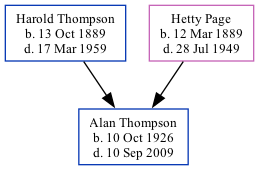

Alan Aybery Thompson 1926 - 2009
[ Home ] | [ Calendar ] | [ Surnames Index ] | [ Family History ]The son of Harold Thompson (a cowman on a farm) and Hetty Page, Alan Thompson, the fourth cousin on the father's side of Nigel Horne, was born in Dover, Kent, England on Oct 10, 19261,2,3. On Sep 29, 1939, he lived at The Bungalow, Temple Ewell, Kent, England1.
He died on Sep 10, 2009 in Dover3.
Parents
- Harold William was born on Oct 13, 1889
- Hetty Camelia was born on Mar 12, 1889
Citations
- 1939 Register - Findmypast (was the son of the head of the household)
- England & Wales births 1837-2006 - Findmypast
- United Kingdom Deaths 2007-2017 - Findmypast
Media
England & Wales births 1837-2006 - BMD/B/1926/4/AZ/001211/079
1939 Register - TNA/R39/1815/1815H/015/35
United Kingdom Deaths - BMD/D/MILLEN/001596255
Family Tree
Generated by Ged2Site. Last updated on Jul 20, 2025